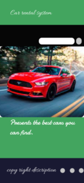
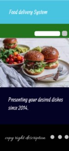

 This frame was designed for DAT car import and export P.L.C back in 2019. Since then they have been satisfied with my work and invited me to do a website for their sister company. The overall system was designed to help them to display their available cars. So that people can pick at home.
This frame was designed for Xend cafe so that they can add a food delivery system into their service in addition to cafeteria. Since then, they have found it very useful and are willing to extend its functionality.So that it provides a better utility.